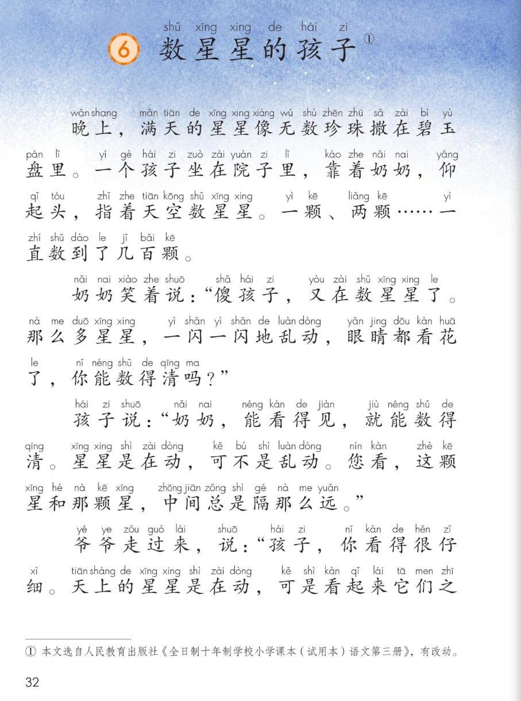
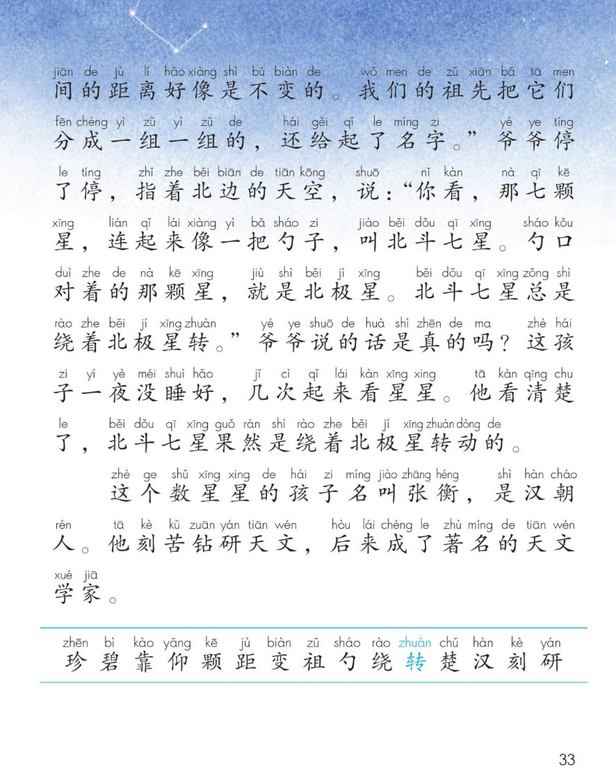
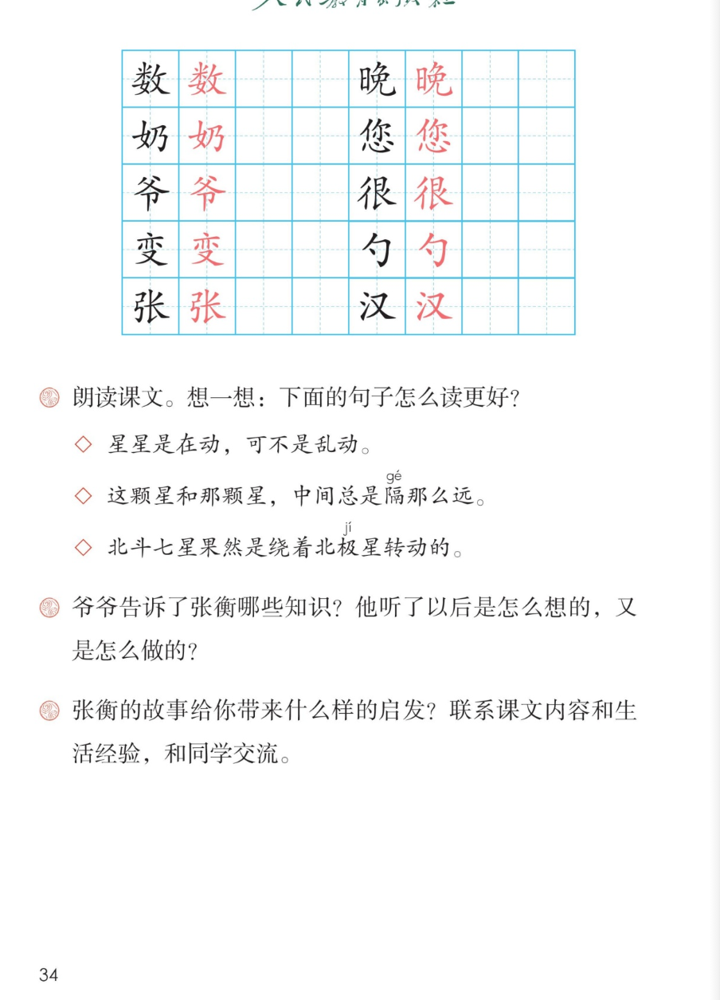

🌟 第 6 课《数星星的孩子》· 有声图文带读
统编版语文 · 第三单元·阅读 · 课本 P32~34
课文 6 个自然段
会认字 15
会写字 10
听写词 10
近义词 4 组
深入理解 8 题
本课本领 分角色朗读
🎧 五步学（可随时点任意一句、一个字、一个词单独听）： ① 听读课文 ——一句一句读，读到哪一句哪一句发光；开「跟读」后读完一句留时间让你自己读。② 学字词 ——15 个会认字、10 个会写字（含书写提示），点一个读一个。③ 词语·听写·造句 ——听写 10 个词（读两遍→你写→报答案→听示范句），再听 4 组近义词辨析。④ 深入理解 ——8 道题（认知 / 理解 / 运用 / 拓展），开放题答案不唯一，先想后看。⑤ 讲故事·分角色 ——按顺序讲张衡数星星这件事，再分角色朗读课文。
点段前的 ①②③ 听整段
🔁 跟读模式：关
👁 隐藏注音（自测用）
注音只标本课要认、要写的字，读音来自课本第 34 页生字表
🎤 朗读要求（老师标准） 数 星星”的“数”读第三声（和“暑”同音）；“绕着北极星转 ”的“转”读第四声 ；省略号 ，读出慢慢数、数不完的感觉；笑着、疼爱 ，爷爷的话读出耐心讲道理 ；郑重 ，带着敬佩。
①
晚上，满天的星星像无数珍zhēn 珠撒在碧bì 玉盘里。
一个孩子坐在院子里，靠kào 着奶奶，仰yǎng 起头，指着天空数shǔ 星星。
一颗kē 、两颗……一直数到了几百颗。
②
奶奶笑着说：“傻shǎ 孩子，又在数星星了。
那么多星星，一闪一闪地乱动，眼睛都看花了，你能数得清吗？”
③
孩子说：“奶奶，能看得见，就能数得清。
星星是在动，可不是乱动。
您看，这颗星和那颗星，中间总是隔gé 那么远。”
④
爷爷走过来，说：“孩子，你看得很仔zǐ 细xì 。
天上的星星是在动，可是看起来它们之间的距jù 离好像是不变biàn 的。
我们的祖zǔ 先把它们分成一组一组的，还给起了名字。”
爷爷停了停，指着北边的天空，说：“你看，那七颗星，连起来像一把勺sháo 子，叫北斗七星。
勺口对着的那颗星，就是北极星。
北斗七星总是绕rào 着北极星转zhuàn 。”
⑤
爷爷说的话是真的吗？
这孩子一夜没睡好，几次起来看星星。
他看清楚chǔ 了，北斗七星果然是绕着北极星转动的。
⑥
这个数星星的孩子名叫张衡，是汉hàn 朝人。
他刻kè 苦钻研天文，后来成了著名的天文学家。
🤔 想一想（点我可跳过）
点图可放大看

第 32 页 · 晚上在院子里数星星

第 33 页 · 爷爷讲北斗七星

第 34 页 · 会写字与课后题
📖 统编版《语文》二年级上册 · 课本第 32~34 页 · 图片仅供个人学习，版权归人民教育出版社所有
点一个字，听读音、词语和课文里的句子
结构、部首、笔画与书写提示为通用规范，供参考，以教材和老师的指导为准
数
shǔ
数星星 · 数一数
13 画 · 左右
左宽右窄，米字末笔是点
晚
wǎn
晚上 · 傍晚
11 画 · 左右
日字旁要窄，末笔竖弯钩要圆
奶
nǎi
奶奶 · 牛奶
5 画 · 左右
女字旁收紧，右边乃字向左斜
您
nín
您好 · 您早
11 画 · 上下
你字在上要扁，心字底要宽
爷
yé
爷爷 · 老爷
6 画 · 上下
父字头撇捺张开，下边竖要直
很
hěn
很多 · 很好
9 画 · 左右
双人旁两撇一竖，右边捺要舒展
变
biàn
变化 · 变了
8 画 · 上下
上面亦字要扁，又字托住上面
勺
sháo
勺子 · 饭勺
3 画 · 半包围
横折钩要圆转，点靠左上
张
zhāng
张衡 · 张开
7 画 · 左右
弓字旁要窄，右边长字横要长
汉
hàn
汉朝 · 汉字
5 画 · 左右
三点水成弧形，又字撇短捺长
点一行，听读这一组词语
数 数星星 数不清 无数
晚 晚上 傍晚 晚饭
爷 爷爷 爷孙 老爷
读两遍 → 你在纸上写 → 报答案 → 听示范句
准备听写 · 共 10 个词
○ ○ ○
点下面的「开始听写」，听到一个词就写一个词。
▶ 开始听写
🔁 再读一遍
👁 看答案
点词听读，点句子听示范句，再自己说一句
1 数星星 会写字
示范句：这个孩子坐在院子里，仰起头数星星。
✏️ 我也能说：谁 + 在哪里 + 数星星
2 晚上 会写字
示范句：晚上，满天的星星亮晶晶的。
✏️ 我也能说：晚上 + 谁 + 做什么
3 奶奶 会写字
示范句：奶奶笑着说，傻孩子，又在数星星了。
✏️ 我也能说：奶奶 + 怎样 + 说
4 爷爷 会写字
示范句：爷爷告诉张衡，那七颗星叫北斗七星。
✏️ 我也能说：爷爷 + 告诉谁 + 什么
5 您好 会写字
示范句：见到老师，要问一声老师您好。
✏️ 我也能说：见到谁 + 问一声 + 您好
6 很多 会写字
示范句：天上有很多星星，数也数不清。
✏️ 我也能说：哪里 + 有很多 + 什么
7 变化 会写字
示范句：天上的星星，位置会慢慢变化。
✏️ 我也能说：什么 + 会 + 变化
8 勺子 会写字
示范句：那七颗星连起来，像一把勺子。
✏️ 我也能说：什么 + 像 + 一把勺子
9 张衡 会写字
示范句：这个数星星的孩子名叫张衡。
✏️ 我也能说：谁 + 名叫 + 什么
10 汉朝 会写字
示范句：数星星的孩子张衡，是汉朝人。
✏️ 我也能说：谁 + 是 + 哪个朝代的人
相同点 / 不一样在哪 / 各造一句
著名 — 有名
相同：都表示名声大、很多人都知道 。
不一样：著名 更书面、更正式；有名 更口语，说话常用。
著名：张衡后来成了著名的天文学家。
仔细 — 认真
相同：都是做事细心、不马虎 。
不一样：仔细 是把细小的地方都看到；认真 是态度端正、不敷衍。
仔细：孩子，你看得很仔细。
果然 — 果真
相同：都是跟原来想的一样 。
不一样：果然 最常用，常说“果然是这样”；果真 语气更重，更强调“真的”。
果然：北斗七星果然是绕着北极星转动的。
好像 — 似乎
相同：都是看起来像、不太确定 。
不一样：好像 更口语，说话常用；似乎 更书面，多用在文章里。
好像：它们之间的距离好像是不变的。
数量词 满天星星 一颗星 两颗星 几百颗 七颗星 一把勺子
一…一…的词 一闪一闪 一颗一颗 一组一组 一次一次
天文词 北斗七星 北极星 天文 天文学家 钻研
表示“看”的词 仰起头看 指着数 眼睛都看花了 看得见 看得很仔细 看清楚了
我也会说（像…） 星星像无数珍珠撒在碧玉盘里。 那七颗星连起来像一把勺子。
标「答案不唯一」的题，说得有道理都对
认知 张衡数星星的时候是什么样子？用课文里的话说一说。看解析
🤔 想一想
解析：
动作是“坐、靠、仰起头、指着、数 ”——一连串动作，说明他看得很专心。
“一直数到了几百颗 ”，说明他很有耐心，已经数了很久。
他“靠着奶奶”，说明这是晚上，祖孙俩一起在院子里看星星。
💡 把这几个动作连起来想一想，眼前就有画面了
认知 爷爷告诉了张衡哪些知识？看解析
🤔 想一想
解析：
星星在动，但距离不变 ——这是爷爷先讲的总的道理。
祖先分组、起名字 ——这是人的办法，把满天星星“整理”清楚。
北斗七星、北极星、北斗绕着北极星转 ——这是三个具体的天文知识。
💡 这一题就是课后第 2 题的前半问，答题要分条说：先说“道理”，再说“具体的星”
理解 奶奶和张衡对星星的看法有什么不一样？看解析
🤔 想一想
解析：
奶奶看到的是“乱动” ——所以她的结论是“数不清”。
张衡看到的是“有规律地动” ——所以他的结论是“能数得清”。
一个只抬头看了一眼，一个一直盯着数到几百颗——看的时间不一样，看到的就不一样 。
💡 本课最要紧的地方：看得仔细，才看得见别人看不见的东西
理解 “星星是在动，可不是乱动。”这句话是什么意思？看解析
🤔 想一想
解析：
前半句承认“在动” ——星星真的会移动，张衡没有说错。
后半句强调“不是乱动” ——它们有规律，不是乱成一团。
能说出“不是乱动”，说明张衡不是随便看，他是看出了规律 。
💡 读这一句，“是在动”读平，“可不是乱动”读重，对比就出来了
理解 听了爷爷的话，张衡是怎么想的，又是怎么做的？（课后题②）看解析
🤔 想一想
解析：
怎么想 ——先怀疑：“爷爷说的话是真的吗？”
怎么做 ——一夜没睡好，几次起来看星星，自己去验证。
结果 ——亲眼看到了，才相信：“果然是绕着北极星转动的。”
💡 肯怀疑、肯自己去看，这就是科学家小时候的样子
运用 课后题①：下面三句话怎么读更好？①星星是在动，可不是乱动。②这颗星和那颗星，中间总是隔那么远。③北斗七星果然是绕着北极星转动的。看解析
🤔 想一想
解析：
第①句：对比着读 ——前轻后重，就把张衡的“不服气”读出来了。
第②句：比划着读 ——“总是”“那么远”放慢，像伸手指着两颗星。
第③句：带惊喜读 ——“果然”重读，读出验证成功的高兴。
💡 这三句读好了，就读出了张衡“看得仔细、想得认真”
运用 用“像”说一句比喻句，说说天上的星星。看解析
🤔 想一想
解析：
课文里的两个比喻：星星像无数珍珠 （写出又多又亮）、七颗星像一把勺子 （写出形状）。
比喻要抓住像在哪里 ：形状像、颜色像、还是亮闪闪的样子像。
还可以说：星星像撒在黑布上的碎钻石；像一盏盏小灯笼挂在夜空。
🌈 答案不唯一，只要说清楚“什么像什么、像在哪里”就是好句子
拓展 张衡的故事给你带来什么样的启发？联系课文内容和生活经验，和同学交流。（课后题③）看解析
🤔 想一想
解析：
启发一：仔细观察。 别人觉得星星在“乱动”，张衡看出了“有规律”——差别就在看得仔不仔细。
启发二：自己验证。 爷爷说了，他还要一夜不睡去看——不轻信，肯动手、肯求证。
启发三：坚持所爱。 小时候爱数星星，长大刻苦钻研天文，后来成了著名的天文学家。
🌈 答案不唯一，能联系课文里的一句话、再说一件自己生活里的事，就说得很好
💬 讲故事支架：先 晚上在院子里数星星 → 再 奶奶说数不清、孩子说能数清 → 接着 爷爷讲北斗七星和北极星 → 最后 一夜没睡看清楚了，后来成了天文学家。
点一个角色，听他（她）说的话
🌟 张衡（孩子）
“奶奶，能看得见，就能数得清。”
💬 要读出有把握、认真 的语气，像在给奶奶讲道理
👵 奶奶
“傻孩子，又在数星星了。”
💬 要读出笑着、疼爱 的语气，“傻孩子”读得亲一点
👴 爷爷
“孩子，你看得很仔细。”
💬 要读出耐心讲解 的语气，像一边说一边指着天空
📖 旁白
“晚上，满天的星星像无数珍珠撒在碧玉盘里……”
💬 要读得清楚、平稳 ，像在讲故事
🙌 齐读
“他刻苦钻研天文，后来成了著名的天文学家。”
💬 全班齐读，读得响亮、郑重 ，带着敬佩